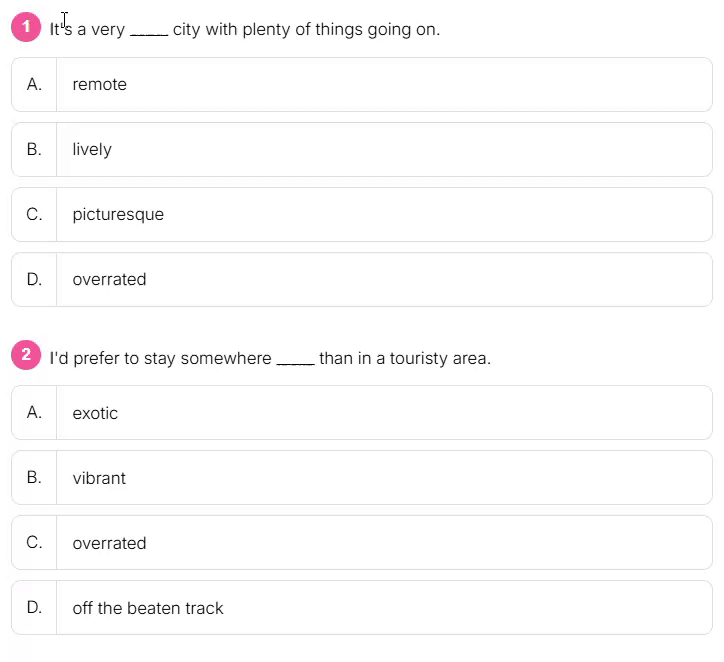
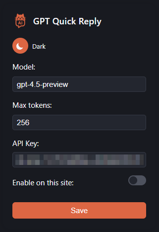
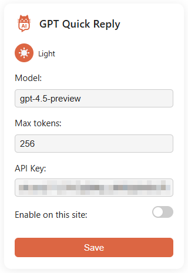

Supercharge Your Exams with GPT Quick Reply
Select text on any webpage and get instant, AI-powered answers in a beautiful popup.
Fast, private, and customizable.

Features
Quick Answers
Select any text and get an instant answer from GPT in a popup.
Context Menu
Right-click selected text and choose Answer with GPT.
Customizable
Choose your GPT model, set max tokens, and manage your API key.
Light & Dark Theme
Switch between beautiful light and dark modes.
Per-site Enable
Enable or disable the extension on specific sites.
Private & Secure
Your API key is stored locally and never shared.
Screenshots

Popup - Dark Mode

Popup - Light Mode
Get Started
- Clone the repo:
git clone https://github.com/jokelbaf/gpt-quick-reply.git - Open chrome://extensions (or your browser's extensions page).
- Enable Developer mode and click Load unpacked.
- Select the gpt-quick-reply folder.
- Click the extension icon to configure your API key and settings.